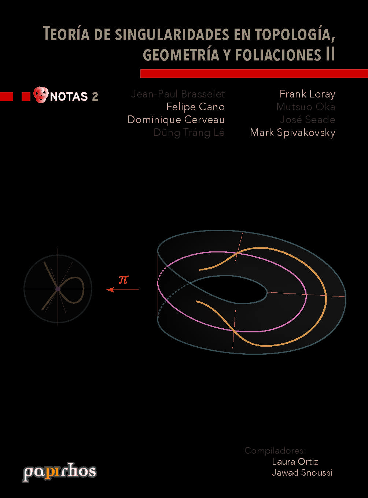

Preprint · pap-not-2
Teoría de singularidades en topología, geometría y foliaciones II
Resumen
Resumen no disponible por el momento.
Versión actual
Versión vigente
Primera versión disponible en Papirhos Preprints.
Cómo citar
Jean-Paul Brasselet, Felipe Cano, Dominique Cerveau, Dung Tráng Lê, Frank Loray, Mutsuo Oka, José Seade, Mark Spivakovsky. (2026). Teoría de singularidades en topología, geometría y foliaciones II. Papirhos Preprints, pap-not-2, v1. https://kavallemon-t.github.io/papirhos-preprints/preprints/pap-not-2/
BibTeX
Historial de versiones
Consulta las versiones anteriores de este preprint, sus fechas de publicación y los cambios realizados.
Primera versión disponible en Papirhos Preprints.
Citación y BibTeX
Jean-Paul Brasselet, Felipe Cano, Dominique Cerveau, Dung Tráng Lê, Frank Loray, Mutsuo Oka, José Seade, Mark Spivakovsky. (2026). Teoría de singularidades en topología, geometría y foliaciones II. Papirhos Preprints, pap-not-2, v1. https://kavallemon-t.github.io/papirhos-preprints/preprints/pap-not-2/
BibTeX